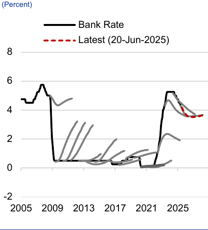
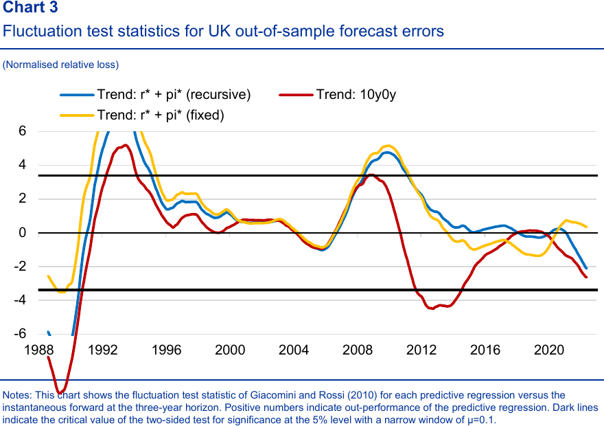
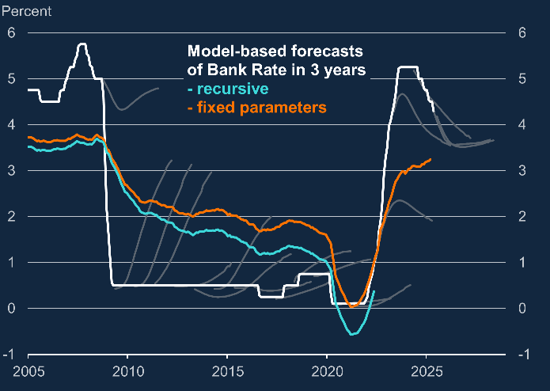
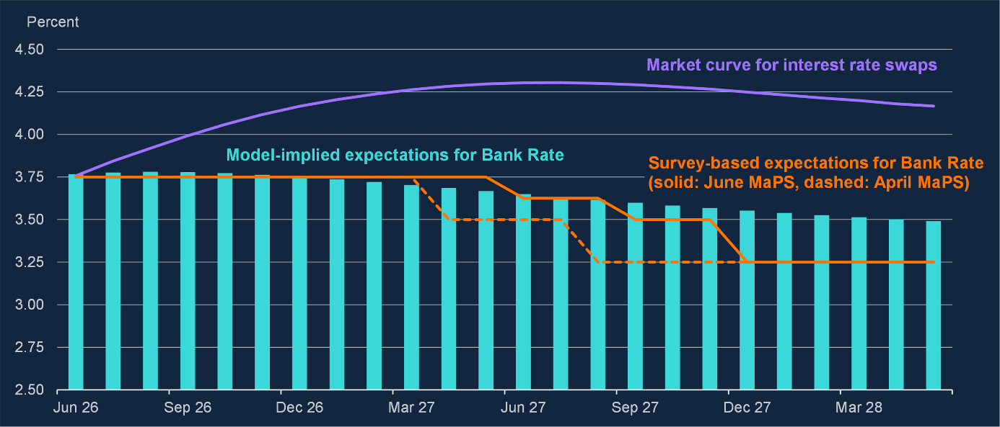

A risk-neutral price for future overnight rates. It contains the probability-weighted rate path, term/risk premium, skew and hedging pressure. It is executable, but it is not a pure forecast.
AlphaHunt / UK short rates
Market versus model
A historical audit of who has predicted the UK policy path better, why the answer changes by regime, and what that means for receiving the current SONIA hike premium.
Research note
28 August 2026
Information set through July MPC
28 August 2026
Information set through July MPC
13%lower 3Y forecast error
The model wins the long sample; the market wins the regime change.
A model-based neutral-rate forecast produced a 2.51pp UK three-year RMS forecast error versus 2.89pp for the raw market forward. That is useful evidence, not a knockout: the models were superior in false-normalisation episodes, while the market captured the 2021–23 inflation-driven hiking cycle far earlier.
First, separate three different objects
Most apparent disagreements come from comparing unlike thingsThe Bank staff's new short-end term-structure model uses OIS plus MaPS and Consensus forecasts to estimate the physical expected path and the residual premium. It is a decomposition, not an MPC commitment.
The Monetary Policy Report traditionally conditions growth and inflation on the market curve. It asks what the economy does if the priced curve occurs; it does not publish the Committee's preferred rate path.
OIS forward = expected future Bank Rate + risk premium + distributional effectsThe wedge is potentially the trade—but only the OIS leg is directly monetisable
Terminology trapThe July 2026 Bank model is not the same model used in the long historical backtest. The live model is a new survey-anchored short-end term-structure model. The historical test uses a model-based nominal neutral rate—real r* plus trend inflation—against a three-year government-liability forward. They answer related, but not identical, questions.
The closest quantitative scorecard
UK, recursive real-time-style exercise; January 1972–May 2025Three-year out-of-sample RMSFE
Market 3Y forward2.89percentage points
versus
r* + inflation trend2.51percentage points
450 recursive forecasts. The model reduced RMSFE by 0.38pp, or 13.1%. In-sample RMSE was similarly 2.88pp for the market benchmark and 2.49pp for the model.
What the statistic does—and does not—prove
- It supports: market forwards are not unbiased medium-horizon forecasts; slow-moving neutral-rate anchors add information.
- It does not support: blindly trading every curve/model wedge. A 2.51pp RMSFE remains large.
- It is not a P&L test: forecast accuracy ignores carry, roll, timing, margin and adverse mark-to-market.
- It is horizon-specific: a three-year result cannot be transplanted mechanically to a six- or twelve-month SONIA trade.
Cleanest conclusionOn average, the model was better. Economically, the edge came from refusing to assume that rates must quickly return to the previous regime. Statistically, the advantage is meaningful but too modest to treat the model as an oracle.
The forecast error through time
This is the test the headline RMSFE was summarisingThe policy-expectations regression
it+36 = αt + i*t + ut+36Recursive expanding-window forecast; slope constrained to one
The target is the realised UK short rate 36 months later. The competing predictor is either the model-based nominal neutral rate, r* + trend inflation, or a market-based rate. Each forecast generates an error:
ej,t = forecastj,t − Bank Ratet+36j = model or market
The plotted fluctuation statistic is a rolling, normalised loss differential versus the three-year instantaneous forward:
dt = e²market,t − e²model,tPositive means the model made the smaller squared error
Successive curves versus Bank RateUK, 2005–May 2025

Black is realised Bank Rate; grey lines are selected April OIS forward curves; red is the latest June 2025 curve. The repeated post-GFC upward arcs are the false-normalisation error in visual form. Source: Taylor, Brandt and Dotta (2025), Chart 1; Bloomberg and BoE calculations.
Rolling relative forecast lossUK out-of-sample errors, approximately 1988–2022
three-year horizon
three-year horizon

Above zero: model winsThe r* plus trend-inflation lines have lower local squared forecast loss than the three-year market forward.
Outside black lines: significantCrossing roughly ±3.4 rejects equal predictive accuracy at the 5% level for the paper's narrow rolling window.
Below zero: market winsThe sharp fall at the right edge is the 2021–22 inflation regime break, when neutral-rate models adjusted too slowly.
Line key: blue = recursive r* + trend inflation; yellow = fixed-intercept r* + trend inflation; red = ten-year-forward trend alternative. The benchmark for every line is the instantaneous three-year forward. Source image: Taylor, Brandt and Dotta (2025), Chart 3. No values have been reverse-engineered or smoothed by AlphaHunt.
What the lines addThe model's average advantage is not stable alpha. It was decisively better around the early-1990s disinflation and the global financial crisis, roughly tied for long stretches, then worse during the 2021–22 lift-off. That time variation is the core evidence for making the current receiver conditional on the inflation regime.
Actual, market and formula forecasts on one chart
The direct 2020s comparisonUK Bank Rate and competing predicted pathsPercent; 2005–2026, with the 2020s at right

Bank Rate fell to 0.10% in March 2020, rose to 5.25% by August 2023, then declined to 3.75% by December 2025.
Each grey arc is the contemporaneous three-year market curve. In the 2020s the curves first missed lift-off, then caught the tightening regime, then repeatedly embedded a medium-term “swoosh” higher.
Aqua is the recursively estimated three-year-ahead model forecast through 2022; orange uses fixed parameters through 2025. Both anchor the medium-term rate below the late market curves.
How to read the 2020s portionThe formula was badly late to the inflation-driven lift-off: its rate forecast stayed near zero just as the realised path accelerated upward. Once policy reached 5.25%, the relationship reversed—the market curves continued to price a higher medium-term path, while the formula settled near roughly 3%. This is the regime-dependence in one picture.
Current path: market versus model and surveysAs of 4 June 2026; percent

Purple: tradable market curveRises from 3.75% toward about 4.30% in 2027, then remains above 4.15% into 2028.
Aqua: formula/model pathBars remain broadly flat near 3.75% initially, then drift toward about 3.50% by spring 2028.
Orange: participant modesJune MaPS holds 3.75% to spring 2027, then falls to 3.25%; April MaPS was more dovish earlier.
Both charts are reproduced from Alan Taylor's June 2026 Bank of England speech, “Central reservations,” Charts 4 and 5. The historical formula is the r* plus trend-inflation model from Taylor, Brandt and Dotta (2025); the current aqua bars use the newer survey-anchored short-end term-structure model. They should not be treated as the same specification.
What actually goes into the decision
Latest official data available on 28 August 2026| Input | Latest reading | Why the MPC cares | Current signal |
|---|---|---|---|
| Headline CPI | 2.9% y/y in July, up from 2.6%; gas prices rose 14.7% m/m after the Ofgem cap reset. | Raises the visible inflation rate and can alter household expectations and wage bargaining even though policy cannot produce gas. | Hawkish first round |
| Core and services CPI | Core CPI 2.6%, unchanged; services CPI eased to 3.4% from 3.6%. | Best near-term test of whether the energy shock is spreading into domestic prices. | Dovish / improving |
| Wage growth | Private-sector regular pay 2.8%; whole-economy regular pay 3.5%. DMP firms report 4.0% and expect 3.4% next year. | Wages drive services costs and persistence. A renewed wage-price loop is the cleanest reason to hike. | Near target-consistent |
| Labour-market slack | Unemployment 4.9%; 707,000 vacancies; 2.5 unemployed people per vacancy; July payrolls down about 94,000 y/y. | More slack reduces worker bargaining power, wage pressure and firms' ability to pass through costs. | Dovish |
| Activity and demand | Q2 GDP +0.4% q/q; consumption +0.3%; business investment +1.7%. BoE still expects subdued growth through early 2027. | Strong demand lets firms protect margins by raising prices; weak demand forces more of the energy shock into margins and real incomes. | Mixed |
| Inflation expectations | DMP one-year CPI expectation 3.4%; three-year 2.8%. Firms' year-ahead own-price expectation 3.9%. | The MPC can look through a temporary supply shock only while medium-term expectations stay anchored. | Near-term high; medium anchored |
| Energy persistence | July MaPS assumption: Brent near $80 in three months and $70 in twelve months. Energy remains above pre-conflict levels and volatile. | Duration matters more than the initial jump: persistence raises the chance of repeated price resets and second-round effects. | Main upside tail |
| Financial conditions | By June, two-year OIS was about 70bp above pre-war and quoted two-year mortgage rates about 80bp higher. | A higher curve tightens the economy before the MPC acts; that can reduce the need for a delivered hike. | Self-tightening |
| Fiscal and sterling | BoE projects increasing fiscal drag on the output gap; sterling is a live import-price transmission channel. | Fiscal restraint lowers demand. Sterling weakness would do the opposite by lifting imported inflation. | Fiscal dovish; FX conditional |
The decision variable is propagation, not July CPI by itselfThe MPC is effectively asking whether higher energy prices merely reduce household real income or instead change wage demands, services pricing and inflation expectations. The first outcome supports holding; the second supports hiking.
What the formula says—and how
Two related models, two horizonsMedium horizon: neutral-rate formula
i*t = r*t + π*tNominal neutral rate = real neutral rate + trend inflation
Bank Ratet+36 = αt + i*t + ut+36Recursive expanding-window regression; slope fixed at one
The slow-moving r* estimate captures structural saving, investment, productivity and global-rate forces; π* captures the inflation trend rather than today's energy print. The fitted intercept corrects the average bias. On the latest historical chart, the fixed-parameter path converges toward roughly 3.0%–3.25%, close to the Bank staff's 3% nominal-neutral anchor.
Short horizon: OIS decomposition
OISt,h = EPt[Bank Ratet+h] + λt,hExpected rate under the physical measure + risk premium
The 2026 staff model fits multiple OIS maturities with a richer factor structure and uses MaPS plus Consensus forecasts as noisy observations of genuine expectations. The difference between fitted OIS and the physical expected path is assigned mainly to the premium.
Current message: Bank Rate broadly flat near 3.75% over the next year, then drifting down toward roughly 3.5%. The model does not say a hike is impossible; it says the upward curve is mostly compensation for uncertainty rather than the central expected path.
Model limitationThe formula deliberately looks through temporary shocks. That is its advantage in a 2010-style episode and its weakness in a 2021-style regime change. Survey anchoring also means the short-end model is not independent of market economists' beliefs.
Bank guidance versus market pricing
The disagreement is smaller—and more technical—than it first appearsThe Committee held at 3.75%; three members wanted 4.00%. Formal guidance is conditional: scale and duration of energy, financial conditions and propagation into wages/prices determine the required stance. There is no promised path.
July MaPS median: 3.75% through April 2027, 3.50% by June/July 2027 and 3.25% by end-2027. Respondents put 71% probability on 3.75% after September and 24.7% on 4.00%.
The OIS curve rose from 3.75% toward roughly 4.3% in 2027 in the June chart. In the Alphahunt August snapshot, year-end SONIA remained near 4.0%. This is expressed through MPC-dated SONIA OIS, short-sterling futures and options.
Why the market curve is higher
- Mean versus mode: MaPS reports the most likely outcome; OIS prices a probability-weighted mean. A 20%–30% hike tail lifts the mean even when “hold” is modal.
- Risk premium: receivers require compensation for an energy-driven upside tail that is painful and correlated with other portfolio losses.
- Positive skew: the potential hiking tail is larger than the near-term cutting tail.
- Real policy dissent: three of nine MPC members already preferred a hike, so this is not a purely technical premium.
- Hedging flows: mortgage lenders, issuers and investors pay fixed when rate volatility rises, mechanically lifting OIS.
Why the wedge can still be tradable
- Financial conditions do some MPC work: higher OIS already raises mortgages and corporate borrowing costs.
- Domestic data are not validating the tail: services inflation is easing, private pay is 2.8%, vacancies are falling and expected employment growth is negative.
- Energy is doing most of the headline damage: July's CPI increase was heavily affected by the price-cap reset.
- The premium can decay without a cut: a hold plus quiet wages is enough for the distribution to narrow.
One-sentence synthesisThe Bank is saying “hold unless the energy shock propagates”; the modal forecaster says “it probably will not”; the model says “the central path is flat”; and the market says “the upside tail is sufficiently costly that receivers must be paid roughly a hike to own it.”
Regime-by-regime record
Score the forecast available then—not the best vintage selected afterward| Episode | What the curve said | What happened | Verdict | Weight for today |
|---|---|---|---|---|
| Post-GFC, 2009–16 | Repeatedly embedded a return toward the old, higher-rate regime. | Bank Rate stayed at 0.50% from March 2009 to August 2016. | Model wins | High: archetypal false-normalisation bias, though the effective lower bound amplified it. |
| Energy/VAT scare, 2010–13 | From 0.50%, priced 0.70% end-2011, 1.20% end-2012 and 1.90% end-2013. | Bank Rate remained 0.50% throughout; weak demand dominated temporary inflation. | Model / dovish view | Very high: closest energy-shock parallel. |
| Gradual tightening, 2018–19 | After the August 2018 hike to 0.75%, priced about 1.40% in three years. | No further pre-Covid hikes; rates collapsed to 0.10% during the pandemic. | Curve too high | Low-medium: Covid makes the realised miss an unfair forecast test. |
| Inflation breakout, 2021–22 | The curve repriced sharply upward as inflation persistence became evident. | Bank Rate rose from 0.10% in 2021 to 3.50% by December 2022. | Market wins | Very high as the main warning against slow-moving models. |
| November 2022 vintage | Priced a 5.25% peak in 2023 Q3; MaPS median central peak was 4.50%. | Bank Rate reached 5.25% in August 2023. | Market exact | High: upside risk premium contained genuine information. |
| July/August 2023 vintage | Priced a peak just over 6% and nearly 5.5% on average over three years. | The delivered peak remained 5.25%; cuts started in August 2024. | Market overshoots | High: even correct regime calls can become crowded late. |
| 2024–26 “swoosh” | Medium-dated forwards repeatedly rose above plausible neutral-rate estimates. | Bank Rate fell from 5.25% to 3.75% by December 2025 and was held through July 2026. | Model so far | High, but current episode is incomplete and cannot yet be finally scored. |
Two episodes that frame the present
2010 is the receiver case; 2021–23 is the invalidation case2010 curve: hikes that never arrivedBank Rate, percent
November 2010 OIS conditioning path
November 2010 OIS conditioning path
Market pathActual Bank Rate
Why the curve failedDomestic gas prices were assumed to rise roughly 10%, inflation remained above target and a hike dissenter existed—but credit, money growth and private demand were weak. First-round inflation never became a rate cycle.
2022–23: right regime, wrong late priceExpected versus delivered peak
Bank Rate, percent
Bank Rate, percent
Nov-22 marketDeliveredAug-23 market
Why the model failed, then the curve overshotSlow-moving neutral-rate models missed a structural inflation break and accelerating wages. Once the hiking regime was obvious, the curve kept extrapolating persistence and priced insurance after most of the move had already occurred.
Why each forecasting method fails
The errors are systematic enough to form a regime checklistRaw market curve failure modes
- Risk-premium contamination: payer demand lifts forwards even if the modal forecast is unchanged.
- Skew: a small probability of aggressive hikes can lift the probability-weighted mean above the most likely outcome.
- False normalisation: forwards gravitate toward yesterday's regime after structural breaks.
- Late-cycle extrapolation: once inflation momentum is visible, the market can price too much persistence.
- Technical pressure: mortgage hedging, issuance and positioning can move OIS independently of economists' modal path.
Model and survey failure modes
- Slow state variables: r* and trend inflation do not react quickly to a regime-changing supply shock.
- Survey anchoring: the 2026 ATSM partly inherits the beliefs and biases of MaPS and Consensus participants.
- Model specification: estimated premia are sensitive to factors, sample period and Gaussian assumptions.
- Modal blindness: the most likely path can ignore a costly but meaningful right tail.
- No live record: the exact short-end model was only published in July 2026.
The current UK setup
Latest official evidence versus the tradable Alphahunt snapshotBank Rate has been unchanged since December 2025. The July 2026 vote was 6–3, with three members preferring a 25bp hike.
Alphahunt's 28 August snapshot has year-end SONIA near one full hike above spot. Refresh with executable prices before trading.
The July MPR says staff's expected one-year path is broadly flat; MaPS similarly expected no change until June 2027 before declines later.
Feb 2026
Pre-conflict curve priced cutsThe February MPR market path implied Bank Rate around 3.3% in 2026 H2.
Apr 2026
Energy shock reversed the curveThe 15-day OIS path rose toward 4.2% in early 2027, while April MaPS still expected unchanged rates through 2026.
Jul 2026
Risk premium became the dominant wedgeThe forward curve was about 77bp above its pre-conflict level on average over three years. The Bank's model attributed much of the upward short-end slope to risk premia.
Now
The premium is still observable, but the MPC split is realDomestic wage pressures have eased and downside CPI surprises appeared, yet three members judged that risk management warranted an immediate hike.
InterpretationThe market/model gap is not simply “market expects one hike, Bank expects none.” A better reading is: the modal path is a hold, while the tradable curve charges receivers for a positively skewed distribution in which renewed energy stress and second-round effects force hikes.
Trade map: what history implies
Translate forecast evidence into a position, not a sloganBase case: receive the excess hike premium, conditionally
The 2010 analogue and the long-run backtest favor fading the upward OIS slope if domestic inflation remains target-consistent. But the 2022 precedent argues against sizing the position as though the model path were known. The premium is compensation for a genuine asymmetric tail and can widen before it converges.
Preferred expression: receive Dec-26 SONIA or 6m6m, sized to survive a temporary repricing above 4%. Options or limited-loss structures are preferable if implied volatility is not prohibitively rich.
✓Stay in if private wage growth and services inflation keep decelerating.
✓Stay in if energy inflation remains first-round and inflation expectations stay anchored.
!Reduce if sterling weakness broadens import-price pressure.
!Exit / invalidate if wages, services prices and expectations reaccelerate together.
!Do not chase once most of the 25bp premium has collapsed without a fresh catalyst.
External price shock, weak domestic demand, limited second rounds. Hike insurance decays and the forward rolls down toward an unchanged fixing.
No delivered hike, but uncertainty stays elevated. Carry and convergence accrue unevenly; the trade works better with patience and controlled DV01.
Energy shock alters wages and price-setting. The three hawkish votes become a majority and the curve's right tail migrates into the modal path.
The non-obvious riskEven if the eventual Bank Rate path is flat, the trade can lose first because risk premia are not required to mean-revert on your schedule. Forecast accuracy is not equivalent to mark-to-market profitability.
Bottom line
Better on average at the three-year horizon, with about 13% lower RMS forecast error.
Markets dominate when inflation changes regime; models dominate when curves price false normalisation or late-cycle insurance.
The evidence favors fading the hike premium, but only while second-round indicators remain quiet and the position can survive premium widening.
Sources and audit trail
Primary sources unless otherwise noted- Bank of England, “Bank Rate expectations in the UK curve following the war in Iran,” 17 July 2026. Methodology and current OIS decomposition.
- Bank of England, July 2026 Monetary Policy Report. Current curve, risk-premium assessment and survey path.
- Bank of England, July 2026 MPC summary and minutes. 3.75% decision and 6–3 vote.
- Alan Taylor, “Central reservations,” June 2026. Market-curve “swoosh,” neutral-rate anchor and forecast-conditioning critique. Views are the author's, not MPC consensus.
- Taylor, Brandt and Dotta, “Does r* predict policy rates?” 2025. UK three-year forecast comparison and RMSFE statistics.
- Bank of England, November 2010 Inflation Report. Quarterly OIS conditioning path and energy assumptions.
- Bank of England, official Bank Rate history. Delivered policy-rate sequence.
- Bank of England, November 2018 Inflation Report. Market path to approximately 1.4% at three years.
- Bank of England, November 2022 Monetary Policy Report. 5.25% market-implied peak and 4.5% MaPS central peak.
- Bank of England, August 2023 Monetary Policy Report. Market-implied peak just above 6%.
- Bank of England Working Paper 343, 2008. Historical warning that no single market-extraction technique is uniformly reliable.
- Bank of England Working Paper 709, 2018. Evidence that short OIS measures expectations well in ordinary periods; expectation measurement is not realised-rate forecasting.
- ONS, Consumer price inflation: July 2026. Headline, core, services and energy-price-cap data.
- ONS, Labour market overview: August 2026. Pay, payroll and labour-market indicators.
- ONS, Vacancies and jobs: August 2026. Vacancies and unemployment-to-vacancy ratio.
- ONS, GDP first quarterly estimate: April–June 2026. GDP, consumption and business-investment growth.
- Bank of England Decision Maker Panel: July 2026. Firms' price, wage, employment and inflation expectations.
- Bank of England Market Participants Survey: July 2026. Modal Bank Rate path, probabilities and macro assumptions.